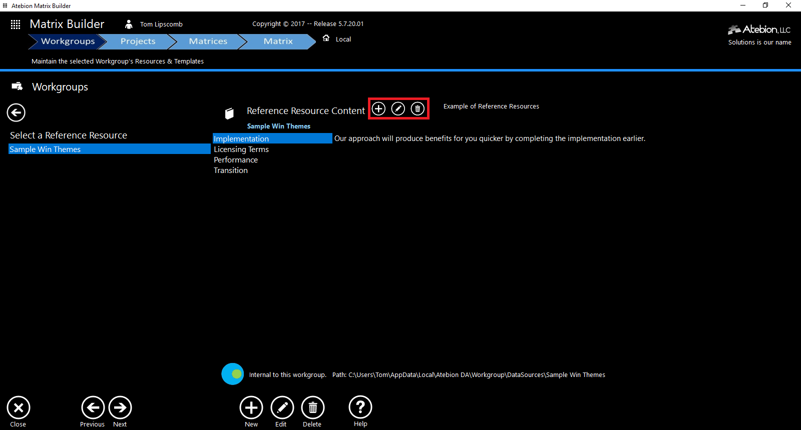

Matrix Builder - helps you to rapidly create matrices
Documentation
- Created: December 31, 2017
- by: Atebion LLC
- Email: Sales@AtebionLLC.com
Welcome! Create comprehensive Compliance Matrices, Proposal Outlines and other matrices. Storyboards/Proposal Development Worksheets (PDW) can be auto-generated per matrix row(s).
In the following sections we will explain how to use the Matrix Builder in the easiest way possible. If you have any questions that you think should have been in this document, please contact us and we'll get back to you as soon as possible. Thanks again!
For questions and training on creating Compliance Matrices, Proposal Outlines and Proposal Development Worksheets see Capture and Proposal Training services from companies such as Shipley Associates. You will need some knowledge of Proposal Development to use this software tool.
Workgroups
Share and work together on content, analysis results, templates and artifacts (e.g. Compliance Matrix & Storyboards/Proposal Development Worksheets (PDW))
- You can belong to one or more workgroups
- The 'Local' workgroup is your personal workgroup
- Local workgroup path is C:\Users\<your computer user name>\AppData\Local\Atebion DA
- Workgroups do not require an internet connection
- Non-Local workgroups are located on your company’s network server(s)
- Workgroups can be in a Secure Environments (e.g. SCIF)
Create Workgroup
Steps:
1. Click the (+) New button at the bottom of the application and the Workgroup window will open.
2. Click the 'Create a new Workgroup' button.
3. Select a drive/folder by clicking the 'Browse' button.
4. Enter a unique Workgroup Name and enter a Description.
5. Click the 'Save' button.
Connect to a Workgroup
Steps:
1. Click the (+) New button at the bottom of the application and a Workgroup window will open.
2. Click the 'Connect to an existing Workgroup' button.
3. Select a Workgroup path by clicking the 'Browse' button.
3. Click the 'Save' button.
Matrix Components
The diagram on the below image shows the three types of components that can define a Matrix.
- Document Types - Document categories associated with shredded/parsed requirements (segments/paragraphs and/or sentences) from Professional Document Analyzer. For example, Federal Requirement Sections (i.e. C, L, and M).
- Lists - A collection of values associated with a specified category, e.g. Statuses, Assignments, Review Weights and etc.
- Reference Resources - Shareable information sources, such as Win Themes, Discriminators, Risks and etc. Reference Resources can be shared with other Workgroups or only within one defined Workgroup. This means your company can have Win Themes at the company level, division level, and team level.

Templates
The Matrix Templates are Excel files (*.xlsx) and Storyboards are MS Word files (*.docx) files.
The Matrix Builder does not directly connect to MS Word or Excel, so there are not any compatibility issues with different versions of MS Office.
Suggest your workgroup team designates one person responsible for ensuring all templates are properly maintained.
Document Types
Document categories associated with shredded/parsed requirements (segments/paragraphs and/or sentences) from Professional Document Analyzer. For example, Federal Requirement Sections (i.e. C, L, and M).
Create Document Types
Steps:
1. Click the 'Document Types' tile (shown in the red rectangle below).
The Document Types sub-panel will open, as shown below.
To go back to the previous Workgroup panel, click the Back button (top-left).
2. Click the (+) New button at the bottom of the application and the Document Type window will open, as shown below.
3. Enter a unique Document Type Name and enter a Description.
4. Click the 'Bach Load' tab
5. In the Delimited Document Types textbox, enter Document Type items with its associated description, one Document Type per line/row. Comma separated Document Type item and item description.
6. After you have entered Document Types, click the 'Save' button to save.
Edit Document Type
Steps:
1. Click the 'Document Types' tile.
2. Select a Document Type from the list.
3. Click the 'Edit' button at the bottom.
Lists
A collection of values associated with a specified category, e.g. Statuses, Assignments, Review Weights and etc.
Create List
Steps:
1. Click the 'List' tile (shown in the red rectangle below).
The List sub-panel will open, as shown below.

To go back to the previous Workgroup panel, click the Back button (top-left).
2. Click the (+) New button at the bottom of the application and the List window will open, as shown below.
3. Enter a unique List Name and enter a Description.
4. Click the 'Bach Load' tab
5. In the Delimited List textbox, enter List items.
6. After you have entered List values, click the 'Save' button to save.
Edit List
Steps:
1. Click the 'List' tile.
2. Select a List from the list.
3. Click the 'Edit' button at the bottom.
Reference Resources
Shareable information sources, such as Win Themes, Discriminators, Risks and etc. Reference Resources can be shared with other Workgroups or only within a defined Workgroup. This means your company can have Win Themes at the company level, division level, and team level.
Create Reference Resource
Steps:
1. Click the 'Ref Resources' tile (shown in the red rectangle below).
The Reference Resources sub-panel will open, as shown below.
To go back to the previous Workgroup panel, click the Back button (top-left).
2. Click the (+) New button at the bottom of the application and the Reference Resource window will open, as shown below.
There are two types of Reference Resources, Internal and Shared. The Internal type is for a specified Workgroup, while the Shared type can be shared with other Workgroups. When creating or connecting to a Shared Reference Resource, you must select the location path (click the Browse button).
3. Enter a unique Reference Resource Name and enter a Description.
4. If you have selected the Shared type, you must select the location path by clicking the Browse button.
5. After you have entered Reference Resource, click the 'Save' button to save.
Maintain Reference Resource Items
Steps:
1. Click the 'Ref. Resources' tile.
2. Select a Reference Resource from the list.
3. Reference Resource items are maintained from the series of buttons shown in the rectangle shown below.

Matrix Templates
Matrix Templates uses Excel files (*.xlsx) with associated parameters for supporting Document Types, Lists and Reference Resources components.
The Matrix Builder does not connect to MS Word or Excel, so there are not any compatibility issues with different versions of MS Office.
Maintain Matrix Templates
Steps:
1. Click the 'Matrix Templates' tile (shown in the red rectangle below).
The Matrix Template sub-panel will open, as shown below.
When a Matrix Template is selected, a template preview is shown on the right and below is the template's Summary configuration.
Matrix Templates can be download from Atebion's website by clicking the 'Download' button denoted in the red rectangle.
New Matrix Template: click the 'New' button.
Edit Matrix Template: select a template from the list and click the 'Edit' button.
The Matrix Template window will open as shown below.
Steps:
1. Select an existing Excel file (*.xlsx) for your Matrix Template, by clicking the 'Select' button. See yellow rectangle in above screen image.
Auto-Populate will only work if the 1st sheet tab is titled as Sheet1.
2. Enter the Template name. The Template name can be different from the Excel file name you selected.
3. Select the first data row number for the Matrix Template. See the red rectangle in the image above.
4. Enter the Matrix Template's Description.
5. 'Does the Matrix Template look okay?' If No, then click the 'No' radio button denoted in the long blue rectangle. A Fix Template button will be displayed.
The Matrix Builder does not support some Excel formatting, such as range. The 'Fix Template' button removes all formatting.
5.1 If you clicked the 'Fix Template' button, then all the template formatting has been removed and the 'Edit Template in Excel' button is displayed. Click the 'Edit Template in Excel' button to open the Template in Excel and add your colors and images back.
5.2 After you have clicked the 'Fix Template' button, the template opens up in Excel. Note, you are NOT editing the original Excel file. Next, make your edits (e.g. add colors and images). Then Save File and close Excel. It is important to close Excel.
5.3 After have Saved your template changes and Closed Excel, click the 'Reload Edited Template" to load your modified template back into the Matrix Builder.
Document Types Steps:
6. Click the 'Document Types' button on the Left, then the Document Types sub-panel will be displayed. See image below.
6.1 Select the Document Types you will be using. See red rectangle in the image above.
6.2 Check (via checkboxes) the Document Type items you want to include in the template. The example we have in the above image is Federal Sections 'C' and 'L'.
6.3 Select the data Source. Either Analysis Results (segments/paragraphs) or Deep Analysis (sentences).
6.4 Select the Content Type. The options are 'Number', 'Caption', 'Number + Caption', and 'Text'.
List Steps:
7. Click the 'Lists' button on the Left, then the Lists sub-panel will be displayed. See image below.
7.1 Check (via checkbox) any Lists that you want to use and select the columns. List selections are optional.
Reference Resources Steps:
8. Click the 'Reference Resources' button on the Left, then the Reference Resources sub-panel will be displayed. See image below.
8.1 Check (via checkbox) any Reference Resources that you want to use and select the columns. Reference Resources selections are optional.
Saving Steps:
9. Click the 'Save' button on the Bottom, if there any Errors or Conflicts, the Alerts and Summary sub-panel will be opened.
9.1 Notice the Alert message in the yellow rectangle image above. Alerts will tell you where there are Errors or Conflicts. In this example, the conflict is the 'List - Compliant' and the 'Reference Resource - Sample Win Themes' are both using column 'E'. To fix this conflict, simply change the column on one of the conflicting items.
9.2 After any Errors or Conflicts have been fixed, click the 'Save' button again.
Projects
Projects are defined in the Professional Document Analyzer. Projects were designed to hold documents and their associated analysis results. Folders group documents together.
From the Workgroup panel, click the 'Next' button at the bottom to go to the Project panel.
Select a Project that you want to create or modify a Matrix for, such as a Compliance Matrix. Notice the Project Name is displayed next to a small Folder icon, as referenced in the yellow rectangle.
The selected Project documents are listed with their analysis status.
Matrices
Matrices are associated with with the selected project.

From the Projects panel, click the 'Next' button at the bottom to go to the Matrices panel.
Select a Matrix that you want to modify and click the 'Next' button. Notice the Matrix Name is displayed next to a small Matrix icon.
Create a Matrix
Steps:
1. Click the (+) 'New' button at the bottom of the application and the New Matrix window is open, as shown below.
2. Select a Matrix Template, and enter the Matrix Name and Description. After you have selected a Matrix Template, the Document Type button will be displayed.
3. Associate your documents with their Document Type.
Split your Federal RFP into separate section documents (i.e. C, L, and M) prior to running the analyzer in the Document Analyzer.
4. (Optional) Auto-Populate shredded/parsed Requirements (e.g. Section L). Select the Document Type you want to Auto-Populate as denoted in the above red rectangle. The Column selection will only be displayed if the selected Document Type column allocation is set to 'Any'. Otherwise Auto-Populate will used the designated allocation column defined at the template level.
Auto-Populate will only work if the 1st sheet tab is titled as Sheet1.
5. Click the 'Save' button.
Matrix
The Matrix panel is where you allocate parsed documents in the form of segments/paragraphs and sentences (Document Types), list values (Lists), and Win Themes, Discriminators, Risks and etc. (Reference Resources).
Allocations are made by dragging from the top panel table and dropping to a row/cell in the Matrix below.
Matrix Panel Details
Itemized Details
The following item numbers correspond to bubble numbers in the above image.
1. Minimize buttons - Minimizes the application’s header and footer areas to gain more workable real estate
2. Document Types button - Opens the Document Types sub-panel
3. Lists button - Opens the Lists values sub-panel
4. Reference Resources - Opens the Reference Resources sub-panel
5. Storyboards button - Opens the Storyboards sub-panel
6. Print button - Prints the Matrix
7. Save button - Saves changes entered directly into a cell. Drag-and-Drop allocations from tables are automatically saved. However, entering text into a cell is not saved until the 'Saved' button has been clicked or a Drag-and-Drop allocation occurs after the entry.
8. Export button - Exports the Matrix to an Excel File
9. Email button - Emails the Matrix as an Excel file attachment via MS Outlook
10. Information Cell Allocations button - Provides allocation information (e.g. date and by whom) from a selected cell.
11. Delete Allocations button - Remove selected allocations from a selected cell.
12. Insert a new Matrix row above the selected row.
13. Removed the selected row.
14. Unallocated Filter button - When this button is highlighted, only unallocated parsed segments/paragraphs or sentences are displayed (all allocated items are hidden).
15. Allocation Progress Bar - Shows a visual representation of quantity allocated vs. unallocated. The numbers next to the Allocation Progress Bar are the 'Allocated/Unallocated' values.
16. Opens the Matrix in MS Excel button - This gives you the ability to manipulate the Matrix in ways not supported in the Matrix Builder, such as giving a cell a background color.
Make certain after you make Matrix modifications in Excel that you save and close Excel. See Step 17.
17. Reload Matrix from Excel button - After you make Matrix modifications in Excel and close Excel, click this button to refresh your changes.
18. Matrix Zoom range scale – Zoom in and out, between 10% to 400% percent. Adjust the zoom that best works for you. Some people like using zoom at 80%, so they can still read the content while giving them a larger view of the Matrix.
Storyboards (i.e. Proposal Development Worksheets)
Storyboards are MS Word documents with fields associated with a particular Matrix Template. However, a Matrix Template may have one or more Storyboard templates. This means you can generate Storyboards with different Templates for the same Matrix.
Itemized Details
The following item numbers correspond to bubble numbers in the above image.
1. Print button - Prints the selected Storyboard
2. MS Word button - Opens the selected Storyboard where you can make modifications.
3. Email button - Email the selected Storyboard as an attachment via MS Outlook.
4. New Storyboard button - Click to generate a new Storyboard and the Storyboard Generation window will open as shown below.
4.1 The Storyboard Names are auto-generated, but you can rename them.
4.2 Select a Storyboard Template from the dropdown list, denoted in green rectangle. Storyboard Templates are defined at the Workgroup panel.
4.3 Select row(s) for the new Storyboard by either clicking a row in the Matrix or checking Matrix Row Numbers, denoted in red rectangle. Also, notice the 'Selected Matrix Rows are identified in the lower right side of the window.
4.4 The Open Storyboard switch - If on (blue and slider on right side), then after you click the 'Generate Storyboard' the new Storyboard will open in MS Word for further editing. Denoted in the yellow rectangle.
5. Edit button - Re-Generates the selected Storyboard. Notice: Re-Generating a Storyboard will replace the current Storyboard and you will lose any edits.
6. Delete button - Removes the selected Storyboard.